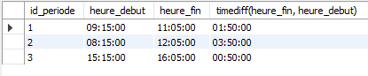
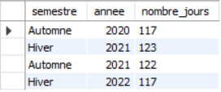
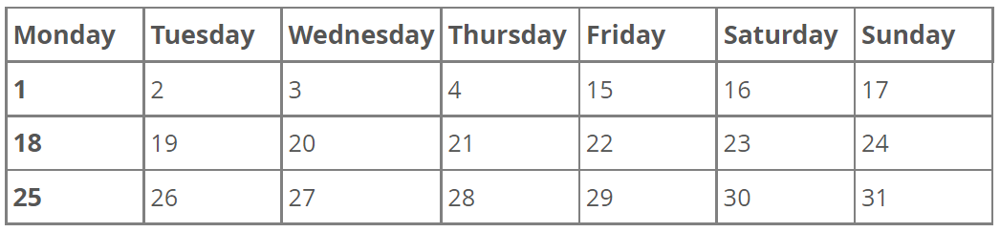
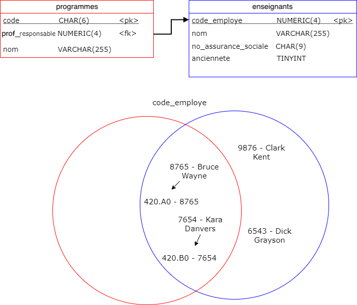
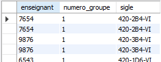
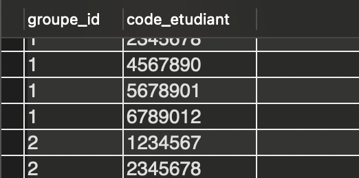
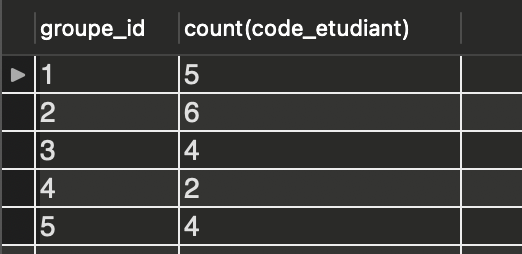
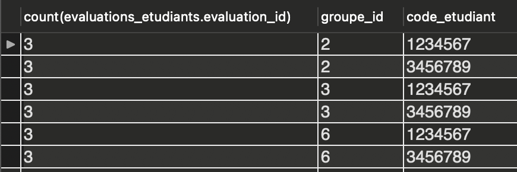
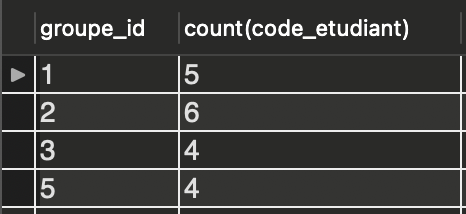

Chapitre 2
Manipuler des données avec SQL
Contenu
- Créer, mettre à jour, supprimer des données
- Sélection, filtrage et opérateurs logiques
- Opérateurs arithmétiques, chaînes de caractères et expressions régulières
- Manipulation de dates
- Jointures et agrégats
- Fonctions statistiques
Créer, mettre à jour et supprimer des données
Insérer un enregistrement Afficher le contenu complet d’une table Mettre à jour un enregistrement Supprimer un enregistrement Atelier
Requêtes SQL
L’ensemble d’instructions du langage SQL pour faire des requêtes est différent de celui pour la structure des données.
On retrouve principalement 4 types de requêtes : - (C) Insertion - (R) Sélection - (U) Mise à jour - (D) Suppression
Insérer un enregistrement
La requête d’insertion est la suivante :
INSERT INTO Nom_table (nom_colonne1, nom_colonne2,...)
VALUES (valeur_colonne1, valeur_colonne2,...);
Insérer un enregistrement
Par exemple, la requête suivante ajoute un étudiant dans la table Étudiant.
INSERT INTO Etudiant (code, nom,
annee_admission, programme)
VALUES (1324567, 'Tony Stark', 2018,
'420.A0');
Insérer un enregistrement
Dans le cas d’un champ assigné automatiquement, comme une clé auto-incrémentée ou l’utilisation d’une valeur par défaut, on n'indique pas la colonne dans la requête INSERT.
INSERT INTO Cours (sigle, nom)
VALUES ('420-2B4-VI', 'Base de données 1');
Le cours BD1 aura alors un id automatique et une durée de 60 heures.

Insérer plusieurs enregistrements
On peut insérer dans une requête plusieurs enregistrements en les séparant par une virgule.
INSERT INTO Etudiant (code, nom, annee_admission, programme)
VALUES (1234567, 'Anthony Stark', 2018, '420.A0'),
(2345678, 'Steve Rogers', 2018, '420.A0'),
(3456789, 'Natasha Romanov', 2019, '420.A1');
Omettre le nom des colonnes
On peut omettre le nom des colonnes à condition que les valeurs soient insérées dans l’ordre des colonnes.
Par exemple, cette instruction est valide :
INSERT INTO Etudiant VALUES
(1234567, '420.A0', 'Anthony Stark', 2018)
Omettre le nom des colonnes
Les deux instructions suivantes ne sont pas valides.
INSERT INTO Cours VALUES ('420-2B4-VI', 'Base de données 1');
- La table Cours comporte 4 colonnes et seules 2 valeurs sont indiquées
INSERT INTO Etudiant VALUES ('Anthony Stark', 2018, '420.A0', 1234567);
- L'ordre des colonnes n’est pas respecté
Utiliser la valeur par défaut
On peut indiquer explicitement à SQL d’utiliser la valeur par défaut en utilisant l’instruction
DEFAULT(nom_colonne).
Ici le cours BD1 aura une durée de 60.
INSERT INTO Cours (sigle, duree, nom) VALUES
('420-2B4-VI', DEFAULT (duree), 'Base de données 1'),
('420-1D6-VI', 90, 'Programmation 1');
Omettre une colonne
Si lors de l’ajout d’un enregistrement une colonne ne possède pas de valeur par défaut et qu’aucune valeur n’est précisée, alors la valeur spéciale NULL est utilisée.
INSERT INTO Cours (nom) VALUES ('Base de données 1');
Ici le sigle de l’enregistrement est NULL.
Afficher le contenu complet d’une table
Pour afficher tous les enregistrements d’une table, on utilise l’instruction suivante :
SELECT * FROM Nom_table;
Nous verrons dans les prochaines sections les requêtes SELECT en détail.
Exercice 2-1
Ajoutez les enseignants et les programmes suivants
Enseigants
| code_employe | nom | no_assurance_sociale | anciennete |
|---|---|---|---|
| 9876 | Clark Kent | 150 150 150 | 8 |
| 8765 | Bruce Wayne | 260 260 260 | 14 |
| 7654 | Kara Danvers | 888 777 666 | 0 |
| 6573 | Richard Grayson | 222 444 666 | 4 |
Exercice 2-1 (suite)
Programmes
| code | nom | responsable |
|---|---|---|
| 420.A0 | Informatique appliquée | Bruce Wayne |
| 420.B0 | Informatique - jeux vidéos | Kara Danvers |
Mettre à jour un enregistrement
On utilise la requête UPDATE pour mettre à jour un enregistrement.
UPDATE Nom_table SET nom_colonne1 = valeur1, nom_colonne2 = valeur2;
Cette syntaxe comporte un défaut. Lequel?
Mettre à jour un enregistrement
On met à jour tous les enregistrements! Dans la plupart des cas, ce n’est pas ce qu’on cherche à faire.
Pour indiquer quel enregistrement mettre à jour, on utilise la clause WHERE qui permet de spécifier une condition.
Clause WHERE
La syntaxe d’une requête UPDATE avec la clause WHERE est :
UPDATE Nom_table
SET nom_colonne1 = valeur1, nom_colonne2 = valeur 2, ...
WHERE condition;
Clause WHERE
Par exemple, on souhaite que le programme 420.A0 (Informatique appliquée) soit maintenant sous la responsabilité de Clark Kent (9876).
UPDATE Programme
SET responsable = 9876
WHERE code = '420.A0';
Désactiver le SafeMode
Si vous n'indiquez pas de clause WHERE ou que celle-ci ne s'applique pas sur une clé, alors la requête sera bloquée par le SafeMode.
Pour désactiver le SafeMode :
Edit > Preferences > SQLEditor > Safe updates Puis reconnectez-vous au serveur.
Exercice 2-2
A. Mettez à jour le profil de Kara Danvers pour assigner la valeur 1 à son ancienneté.
B. Mettez à jour le cours BD1 pour qu'il ait une durée de 90 heures.
Duplicata de clé primaire
Qu’arrive-t-il si on ajoute un enregistrement pour lequel la clé primaire existe déjà?
2 choix : 1) Provoquer une erreur (ce qui se produit normalement) 2) Offrir la possibilité de mettre à jour l’enregistrement
Mettre à jour si la clé existe déjà
On modifie la requête INSERT de la façon suivante :
INSERT INTO Nom_table (nom_colonne1, nom_colonne2,…)
VALUES (valeur1, valeur2,…)
ON DUPLICATE KEY UPDATE;
Quand utiliser ON DUPLICATE KEY UPDATE ?
Ce n’est pas toujours une bonne idée d’utiliser ON DUPLICATE KEY UPDATE.
Souvent, on veut signaler une erreur pour indiquer à l’utilisateur qu’il fait une opération non standard.
On peut utiliser ON DUPLICATE KEY UPDATE lorsqu’on transfère des données ou que l’on est sûr que les enregistrements sont identiques.
Supprimer un enregistrement
La requête de suppression est DELETE et a la syntaxe suivante :
DELETE FROM Nom_table WHERE condition;
Comme pour les requêtes DROP, aucune confirmation n'est demandée.
Attention : s’il n’y a pas de clause WHERE et que le SafeMode est désactivé, vous allez supprimer toutes les données de la table.
Exercice 2-3
L'enseignant Bruce Wayne souhaite quitter son poste d'enseignant pour devenir un riche homme d'affaires. Retirez-le de la table Enseignants.
Ajoutez-le de nouveau par la suite et réassignez-le comme responsable de programme.
Difficultés : 1. Vérifier vos contraintes de clé étrangère 2. Pour vérifier si une valeur est NULL, on doit utiliser l'expression IS NULL et non « = NULL » (et != NULL devient IS NOT NULL)
Sélection, filtrage et opérateurs logiques
Sélection de colonnes Filtrage des résultats Opérateurs logiques Ordonner et limiter
Sélection de colonnes
Pour sélectionner des données, la requête est SELECT et à la syntaxe de base suivante :
SELECT nom_colonne1, nom_colonne2,… FROM Nom_table;
On indique après le SELECT que le nom des colonnes que l’on souhaite récupérer.
Sélection de colonnes
Pour récupérer les colonnes sigle et nom de la table Cours, on utilise la requête suivante :
SELECT sigle, nom FROM Cours;
On utilise le symbole * pour indiquer la sélection de toutes les colonnes.
SELECT * FROM Nom_table;
Alias
Il est possible de renommer des colonnes lors de la sélection (on verra plus tard des applications de ce concept)
Le mot-clé à utiliser est AS
SELECT sigle, nom AS nom_cours FROM Cours
Filtrer les enregistrements
Tout comme dans un UPDATE ou DELETE, il est possible d'utiliser la clause WHERE dans un SELECT afin de restreindre le nombre d'enregistrements affectés.
SELECT nom_colonne1, nom_colonne2,… FROM Nom_table
WHERE condition;
Création de conditions
On peut utiliser les opérateurs suivants pour construire des conditions.
| Opérateur | Symbole |
|---|---|
| Égal | = |
| Différent de | <> |
| Plus grand que | > |
| Plus grand ou égal que | >= |
| Plus petit que | < |
| Plus petit ou égal que | <= |
Clause WHERE avec valeur NULL
Pour récupérer les colonnes dont la valeur est NULL, la structure de la condition est différente. Il faut utiliser le mot-clé IS.
SELECT nom_colonne1, nom_colonne2... FROM Nom_table WHERE nom_colonne IS NULL;
On ajoute le mot-clé NOT pour avoir les colonnes qui ne sont pas NULL
SELECT nom_colonne1, nom_colonne2... FROM Nom_table WHERE nom_colonne IS NOT NULL;
Filtrer les enregistrements
Pour sélectionner le nom des cours dont la durée est supérieure ou égale à 60 heures on utilise la requête suivante.
SELECT nom FROM Cours
WHERE duree >= 60;
Pour sélectionner les sigles des cours dont le nom est NULL, on utilise la requête suivante.
SELECT sigle FROM Cours
WHERE nom IS NULL;
Opérateurs logiques
On peut combiner les opérations de filtrage en utilisant les opérateurs logiques.
| Opérateur | Instruction |
|---|---|
| Et | AND |
| Ou | OR |
Filtrer les enregistrements
Sélectionnez le nom des cours où la durée est entre 60 et 75 heures incluse.
SELECT nom FROM Cours
WHERE duree >= 60 AND duree <= 75;
Exercice 2-4
À partir du script Ecole.sql
A. Sélectionnez les codes d'employé des enseignants qui ont au moins 5 ans d'ancienneté. B. Sélectionnez le nom des étudiants admis entre 2019 et 2020. C. Sélectionnez la date de début de session de toutes les sessions d'automne.
Ordonner les résultats
Pour obtenir des résultats triés, on utilise la clause ORDER BY. Cette clause est optionnelle.
SELECT nom_colonne1, nom_colonne2, ... FROM Nom_table
WHERE condition
ORDER BY nom_colonne1, nom_colonne2, ...
Il faut porter attention à la taille de la sélection, car un tri devient vite couteux en ressources.
Ordonner les résultats
Pour sélectionner le nom et la durée des cours et les classer en ordre alphabétique on utilise la requete suivante.
SELECT nom, duree FROM Cours
ORDER by nom;
Ordonner les résultats
Maintenant, on veut la même requête, mais en ordonnant d'abord par durée, puis par ordre alphabétique. Voici le résultat attendu :
| Nom | Duree |
|---|---|
| Mathématique de l'ordinateur | 45 |
| Base de donnees 1 | 60 |
| Fonctionnement de l'ordinateur | 60 |
| Développement Web 2 | 75 |
| Programmation 1 | 90 |
| Programmation 2 | 90 |
Ordonner les résultats
On peut trier sur plusieurs colonnes en les séparant par des virgules. Le tri se fait en ordre inverse que les colonnes sont indiquées.
SELECT nom, duree FROM Cours
ORDER BY duree, nom;
Ici on tri par ordre alphabétique et après par durée. Donc le résultat final est globablement trié par durée, et pour chaque durée, les éléments sont en ordre alphabétique.
Tris stables et instables
-
Dans la théorie des tris (oui, ça existe et c'est assez riche comme théorie), on parle de tri stable si, pour des valeurs égales, l'ordre original est préservé.
-
Dans l'exemple précédent, on tri par ordre alphabétique d'abord. Ensuite, quand on tri par durée, deux cours de même durée resteront dans l'ordre (le tri par durée ne change pas l'ordre des éléments). C'est ce qu'on appelle un tri stable.
-
Bien qu'intéressant parce qu'ils permettent le tri par plusieurs colonnes successivement, les tris stables (bubble, insertion, merge) sont généralement plus lents que les tris instables (quicksort, shellsort, radix, bogosort (a.k.a stupid sort)).
Ordonnancement des caractères
Comment se fait un tri sur un CHAR/VARCHAR ?
-
Par le code ASCII donc numéro en premier, ensuite lettres majuscules, ensuite lettres minuscules.
-
«Boujour» vient donc avant «allo»
-
Certains caractères spéciaux sont entre les majuscules et minuscules !
Ordre décroissant
On peut ajouter l’ordre du tri après le nom d'une colonne dans la clause ORDER BY.
- ASC pour ascendant (croissant). Cette valeur est celle par défaut.
- DESC pour descendant (décroissant)
SELECT * FROM Table
ORDER BY nom_colonne1, nom_colonne2 DESC;
SELECT * FROM Table
ORDER BY nom_colonne1 DESC, nom_colonne2;
Limiter les résultats
On peut aussi indiquer un nombre maximal de résultats à afficher avec la clause LIMIT
LIMIT nombre_sélectionné
LIMIT premier_enregistrement, nombre_sélectionné
La clause LIMIT est optionnelle.
Limiter les résultats
On veut par exemple seulement les 5 premiers cours pour avoir un aperçu des données dans la table Cours.
SELECT * FROM Cours
LIMIT 0, 5;
## Alternative
SELECT * FROM Cours
LIMIT 5;
Exercice 2-5
A. Sélectionnez les 5 évaluations ayant la plus basse pondération B. Sélectionnez le nom des 3 étudiants qui ont été admis le plus récemment C. Sélectionnez tous les groupes, triés par numéro de groupe en ordre croissant et par session, de la plus récente à la plus ancienne (supposez que les sessions sont ajoutées dans l'ordre quelles arrivent). Les groupes d'un même cours doivent être regroupés à l'affichage.
Opérateurs arithmétiques et chaînes de caractères
Opérations arithmétiques Sélection sur les chaînes de caractères Regex Atelier
Opérations arithmétiques
On peut effectuer des opérations arithmétiques lors des requêtes.
| Opérateur | Symbole |
|---|---|
| Addition | + |
| Soustraction | - |
| Multiplication | * |
| Division | / |
| Modulo | % |
Opérations arithmétiques
On veut sélectionner le nombre d’heures par semaine de chaque cours, sachant qu'une session dure 15 semaines.
SELECT duree / 15 FROM Cours;
On peut utiliser des noms de colonne des deux côtés de l'opérateur.
Recherche sur les chaînes de caractères
Pour rechercher simplement sur des chaînes de caractères (CHAR, VARCHAR) on utilise l’opérateur LIKE et les patterns de recherche.
Les patterns disposes de 3 caractères spéciaux : - % : correspond à 0, 1 ou plusieurs caractères - _ : correspond à 1 unique caractère - \ : permet d’échapper les caractères % ou _
Rechercher sur un objet TEXT risque de prendre énormément de temps. C'est le type d'opération qu'on évite à moins d'y être contraint.
Recherche sur les chaînes de caractères
Rechercher tous les mots qui commencent par «des» * Pattern : des%
Rechercher des mots de 2 lettres terminant par e * Pattern : _e
Rechercher des mots terminant par le symbole % * Pattern : %\%
Exemple LIKE
On veut sélectionner les pondérations et le titre de toutes les évaluation comportant le mot « final » ou « finale »
SELECT ponderation, titre FROM Evaluation
WHERE titre LIKE '%final%';
On peut utiliser des noms de colonne des deux côtés de l'opérateur.

Expressions régulières (REGEX)
Les patterns sont simples à utilisés, mais aussi limités. Pour faire une recherche plus avancée, on utilise les REGEX (Regular Expression).
Pour introduire une REGEX en MySQL, on utilise la syntaxe suivante :
SELECT colonne FROM Table WHERE colonne RLIKE 'regex';
Rechercher un caractère
À moins qu'il s'agisse d'un caractère spécial, indiquez une lettre dans une REGEX permet de chercher celle-ci, n'importe où dans la chaîne.
| Chaîne | Regex | Trouvé |
|---|---|---|
| abc | a | Oui |
| cba | a | Oui |
| abc | ab | Oui |
| cba | ab | Non |
| cba | ba | Oui |
| abc | d | Non |
Début et fin
Pour indiquer le début d'une chaîne, on utilise le symbole ^, et pour la fin, le symbole $.
| Chaîne | Regex | Trouvé |
|---|---|---|
| abc | ^a | Oui |
| cba | a$ | Oui |
| abc | ^bc | Non |
| abc | ^ab$ | Non |
| abc | ab$ | Non |
Répétitions
Les REGEX offrent 3 différents caractères spéciaux pour la répétition : * * : indique que le caractère peut s'y trouver 0, 1 ou plusieurs fois * ? : indique que le caractère peut s'y trouver 0 ou 1 fois * + : indique que le caractère doit s'y trouver au moins une fois (1 ou plusieurs)
Répétitions
| Chaîne | Regex | Trouvé |
|---|---|---|
| abc | a* | Oui |
| cba | a+ | Oui |
| abc | b*c | Oui |
| aac | b*c | Oui |
| aac | a?c | Non |
| Chaîne | Regex | Trouvé |
|---|---|---|
| aac | a+c | Oui |
| bbc | a+c | Non |
| aaaaaaaaaaaa | a* | Oui |
| aaaaaaaaaaaa | a? | Non |
| aaaaaaaaaaaa | a+ | Oui |
Exercice 2-6
Écrivez les REGEX pour trouver les informations suivantes parmis les mots suivants : chat, chaton, chatte, carotte, chalet, valet, animal
Utilisez le site https://regex101.com/ pour vous aider.
A. Les mots contenant « chat » (3 mots) B. Les mots commençant par « ch » (4 mots) C. Les mots contenant un ou deux 2 « t » (6 mots) D. Les mots finissant par « et » ou « e » (4 mots) E. Les mots contenant « a » suivis de 1 ou plusieurs « t » (3 mots)
Répétitions
On peut aussi spécifier le nombre exacte de répétition recherché ou les mettre dans un intervalle. On utilise la notation {min, max} ou {nombre}. On peut omettre le max si l'on cherche au moins x caractères et omettre le min si l'on cherche au plus x caractères
| Intervalle | Signification |
|---|---|
| {1, 3} | Entre 1 et 3 répétitions |
| {4} | Exactement 4 répétitions |
| {5,} | 5 répétitions et plus |
| {,2} | Pas plus de 2 répétitions (équivalent à {0, 2}) |
| {3,1} | Provoque une erreur |
Classes de caractères
On peut sélectionner tous les caractères compris entre deux caractères (au sens du code ASCII), dans un ordre quelconque avec les classes de caractères.
On indique une classe avec [min-max]. On peut juxtaposé des intervalles pour augmenter la portée de la classe.
| Classe | Signification |
|---|---|
| [a-z] | N'importe quelle lettre minuscule |
| [02468] | N'importe quel nombre pair |
| [a-zA-Z] | N'importe quelle lettre majuscule ou minuscule |
| [a-z-] | N'importe quelle lettre minuscule et le trait d'union (toujours à la fin !) |
| [a-zA-Z0-9] | N'importe quelle lettre ou nombre |
Classes de caractères
| Énoncé | REGEX |
|---|---|
| Un numéro de téléphone | [0-9]{3}-[0-9]{3}-[0-9]{4} |
| Une séquence contenant entre 3 et 8 lettres | [a-zA-Z]{3,8} |
| Un mot de 6 lettres commençant par h | ^h[a-z]{5}$ |
Exercice 2-7
Écrivez les REGEX pour trouver les informations suivantes parmis les mots suivants : chat, chaton, chatte, carotte, chalet, valet, animal
Utilisez le site https://regex101.com/ pour vous aider.
A. Les mots de 4 lettres (1 mot) B. Les mots débutant par « cha » et ayant au moins 5 lettres (3 mots) C. Les mots qui contiennent au moins 3 voyelles. (2 mots)
Classes spéciales
Les REGEX définissent un certains nombres de classes et de caractères spéciaux.
| Classe | Signification |
|---|---|
| \w | Tout caractère de mot (lettre et nombres) [a-zA-Z0-9_] |
| \d | Tout nombre [0-9] |
| \s | Espaces [\n\r\t ] |
| \W \D \S | La négation de la classe associé à la minuscule |
Classes spéciales MySQL
Les REGEX dans MySQL définissent des classes spéciales qui leur sont propres. Pour les utiliser on les écrits entre crochets en utilisant la syntaxe suivante :
[:classe de caractere:]
| Nom de la classe | Contenu |
|---|---|
| alnum | Caractères alphanumériques (comme \w sauf _) |
| alpha | Caractères de l'alphabet |
| space | Caractères d'espacement (semblable à \s) |
| cntrl | Caractères de contrôles (comme tabulation ou retour à la ligne) |
| digit | Caractères numériques (comme \d) |
| lower, upper | Caractères alphabétiques minuscules ou majuscules |
Plus de classes : https://dev.mysql.com/doc/refman/8.0/en/regexp.html#regexp-syntax
Caractère spéciaux
| Classe | Signification |
|---|---|
| . | N'importe quel caractère |
| | | Opérateur ou |
| ^ | Opérateur de négation |
| - | Trait d'union, doit toujours être à la fin d'une classe |
Par exemple [^ab] vérifie que ni « a » ni « b » apparaîssent.
Options
À la fin d'une REGEX on peut indiquer certaines options. Cela ne fonctionne pas en MySQL. Voici les options les plus communes.
| Lettre | Option |
|---|---|
| g | Greedy : retourne toutes les occurences où la REGEX est trouvée (Pas en SQL) |
| U | Ungreedy : retourne uniquement la première occurence où la REGEX est trouvée (Pas en SQL) |
| m | Multiline : ^ et $ indique le début et la fin d'une ligne |
| i | Case insensitive : la recherche n'est pas sensible à la casse |
| c | Case sensitive : la recherche est sensible à la casse |
Manipulation de dates
- Fonctions de conversion et de temps actuel
- Addition et manipulation du temps
- Atelier
Fonctions SQL de manipulation de dates
Les fonctions SQL date, time et datetime permettent de convertir explicitement une chaîne de caractère en DATE, TIME ou DATETIME respectivement (ou convertir les formats de date entre eux). À l'insertion des données, des conversions implicitent s'opèrent.

INSERT INTO Etudiant (code, nom, annee_admission,
date_naissance, programme) VALUES
(1234567, 'Tony Stark', 2019, date('1970-05-29'), '420.A0'),
(2345678, 'Steve Rogers' 2019, date('1918-07-04'), '420.A0');
Extraire des informations de la date/temps
On peut avoir besoin d’extraire certains éléments des types DATE, TIME ou DATETIME.
Une fonction existe pour chaque type. La fonction extract permet d’extraire plusieurs informations à la fois.
https://dev.mysql.com/doc/refman/8.0/en/date-and-time-functions.html#function_extract
Extraire des informations de la date/temps
Exemple : vendredi 2021-02-05 11:04:19
| Fonction | Retourne | Valeur |
|---|---|---|
| year | l'année | 2021 |
| month | le numéro du mois | 2 |
| day / dayofmonth | le numéro du jour dans le mois | 5 |
| hour | l'heure | 11 |
| minute | le nombre de minute | 4 |
| second | le nombre de secondes | 19 |
Extraire des informations de la date/temps
Exemple : vendredi 2021-02-05 11:04:19
| Fonction | Retourne | Valeur |
|---|---|---|
| dayofweek | le numéro du jour de la semaine (0 = dimanche) | 5 |
| dayname | le nom du jour (anglais) | Friday |
| monthname | le nom du mois (anglais) | February |
| dayofyear | le numéro du jour dans l'année | 36 |
| weekofyear | le numéro de la semaine dans l'année | 5 |
| week | le numéro de la semaine | 5 |
Date et heure actuelle
On utilise les fonctions suivantes pour obtenir la date et l’heure actuelle.
| Fonction | Type de retour |
|---|---|
| now | DATETIME |
| current_date | DATE |
| current_time | TIME |
| current_timestamp | TIMESTAMP |
Différences de temps
Pour considérer la différence entre 2 temps (TIME ou DATETIME), on utilise la fonction timediff.
Le résultat de timediff est exprimé en termes de TIME. Si un type DATETIME est utilisé, la partie de la date est ignorée.
Les deux arguments doivent être du même type.
Exemple de timediff
Par exemple, chaque periode du cours possède un temps de début et de fin et on souhaite connaître la longueur des périodes.
SELECT id_periode, heure_debut, heure_fin,
timediff(heure_fin, heure_debut)
FROM Periode;


Différence de dates
De même façon la fonction datediff permet de calculer la différence entre deux dates.
Le résultat de datediff est exprimé en termes de nombre de jours. Si un type DATETIME est utilisé, la partie du temps est ignorée.
Les deux arguments doivent être du même type.
Exemple de différence de dates
Par exemple, on peut exprimer la longueur d'une session en terme de jours, mais cela n'est pas toujours parlant.
SELECT semestre, annee,
datediff(fin_session, debut_session) AS nombre_jours
FROM Session;

Construire une date à partir d'un nombre de jour
La fonction from_days permet de construire la date à partir d'un nombre de jours.
Toutefois, cette fonction ne devrait pas être utilisée si le résultat est hors des limites habituels des dates.
Différence de DATETIME ?
Il n’y a pas de fonction qui retourne l’addition ou différence de DATETIME. La partie de date et du temps doivent être traités séparément.
Addition de temps
Pour ajouter du temps à un type TIME on utilise la fonction addtime.
Cette fonction ajoute deux types time ensemble.
addtime ('00:02:15', '00:03:18')
-- retourne 0 h 5 m 33 s
Addition de date
La fonction adddate ajoute un intervalle à un type DATE ou à un type DATETIME. On inscrit un intervalle avec la syntaxe suivante.
INTERVAL nombre UNITE
Les unités possibles sont YEAR, MONTH, WEEK, DAY, HOUR, MINUTE, SECOND https://dev.mysql.com/doc/refman/8.0/en/expressions.html#temporal-intervals
Addition de date
Pour ajouter une journée à la date du 15 janvier 2022.
adddate ('2022-01-15', INTERVAL 1 DAY)
-- retourne 2022-01-16
Soustraction de date
Pour soustraire un intervalle à un type DATE ou DATETIME, on peut utiliser la fonction subdate.
Cette fonction s’utilise exactement comme adddate.
Exercice 2-8
On veut le titre des documents qui : A. ont été remis au mois de mai B. ont été remis dans les deux dernières années
On veut le semestre et l'année des sessions qui : C. Durent plus de 17 semaines
Manipulation de timestamp
Deux fonctions permettent la manipulation des timestamp :
- timestampadd
- timestampdiff
Les fonctions addition ou soustraient 2 timestamp et retournent la valeur sous forme de l’unité indiquée.
Manipulation de timestamp
Obtenir l’addition de 3 minutes à l’heure actuelle.
timestampadd (MINUTE, 3, current_timestamp())
Obtenir le nombre de jours avant Noël.
timestampdiff (DAY, '2022-12-25', current_timestamp ())
Gestion des fuseaux horaires
MySQL offre plusieurs fonctions pour gérer des informations de différents fuseaux horaires.
Toutes les fonctions de manipulation du temps sont décrites ici:
https://dev.mysql.com/doc/refman/8.0/en/date-and-time-functions.html
Curiosité de date
Il y a longtemps, le calendrier Julien (de Jules César) a été introduit avec une semaine jours et des cycles annuels basés sur le Soleil. Malheureusement, avec l'exactitude des méthodes de mesure de l'époque, l'année julienne devait être corrigée.
En 1582, le monde occidental a passé au calendrier Grégorien (demande du pape Grégoire XIII). qui régularise les années et les durées des jours en introduisant les années bisextiles (sur un cycle de 400 ans).
Par contre, le passage a demandé un ajustement particulier...
Correction d'octobre 1582
Voici le calendrier du mois d'octobre 1582. Les 10 jours supprimés sont entre autre les 9 années bissextile en trop entre le sixième et le seizième siècle (500, 600, 700, 900, 1000, 1100, 1300, 1400 et 1500).

Calendrier Grégorien proleptique
Un tel calendrier est un calendrier Grégorien rétropoler à partir d'aujourd'hui. Les dates retirées dans la correction sont inclues dans le calendrier Grégorien proleptique.
Il s'agit de ce calendrier que MySQL utilise, donc les dates retirées sont valides (exemple 8 octobre 1582), même si elles n'ont jamais réellement existées.
Jointures et agrégats
Jointures internes Jointures naturelles Atelier Agrégats de données Atelier
Problème
Pour chaque programme, on veut afficher le nom du programme et le nom de la personne responsable. On aurait un résultat du format suivant
| Nom programme | Nom responsable |
|---|---|
| Informatique appliquée | Bruce Wayne |
| Informatique - Jeux Vidéo | Kara Danvers |
Le problème : nom programme et nom professeur sont dans deux tables différentes.
Relation Programme - Enseignant
Jointures
Une jointure permet de « joindre » deux tables ensemble pour en créer une seule. Ici la table résultant n'est pas une « vraie » table au sens où elle n'est pas enregistrer dans la base de données.
Il existe 3 types de jointures : - Jointures internes et naturelles (vues en BD1) - Jointures à gauche et à droite (vues en BD2) - Jointures externes ou complètes (vues en BD2)
Jointures internes
Une jointure interne permet de récupérer les informations en croisant les informations de plusieurs tables.
On peut voir la jointure interne comme une intersection d'ensembles basé sur l'égalité d'une paire de colonnes.

Syntaxe des jointures internes
SELECT * FROM Nom_table_1 INNER JOIN Nom_table_2
ON Nom_table_1.colonne_1 = Nom_table_2.colonne_2;
Donc dans l'exemple précédent
SELECT Programme.nom, Enseignant.nom FROM Enseignant INNER JOIN Programme
ON Enseignant.code_employe = Programme.responsable;
On préfixe les colonnes des noms de table pour éviter les ambiguité de nom.
Allègement de l'écriture
Lorsqu'il n'y a pas de risque d'ambiguité de nom, on peut omettre le nom des tables comme préfixe. On peut aussi utiliser les alias pour clarifier le nom des colonnes.
SELECT Programme.nom AS 'Nom programme', Enseignant.nom AS 'Responsable'
FROM Enseignant INNER JOIN Programme
ON code_employe = responsable;

Exercice 2-9
A. Sélectionnez le nom de chaque étudiant et le nom du programme dans lequel il est inscrit. Triez les résultats par programme.
B. Sélectionnez pour chaque document le code de l'étudiant qui l'a remis. Affichez le nom du document et le code de l'étudiant.
Jointure naturelle
Une jointure naturelle fonctionne comme la jointure interne, mais ne nécessite pas de préciser sur quelle colonne se fait la jointure.
Les colonnes portant le même nom entre les 2 tables servent à effectuer la jointure.
ATTENTION : si plus d'une paire de colonne portent le même nom, alors la jointure naturelle vérifira que les deux paires concordent.
Jointure naturelle
Syntaxe de la jointure naturelle :
SELECT * FROM Nom_table_1 NATURAL JOIN Nom_table_2;
On veut afficher le code d'employé et le sigle du cours pour chaque groupe.
SELECT enseignant, numero_groupe, sigle
FROM Groupe NATURAL JOIN Cours;


Exercice 2-10
A. Sélectionnez le titre des évaluations pour lequel aucun document n'est associé. B. Sélectionnez l'année admission et le nom de l'étudiant pour chaque étudiant des programmes sous la responsabilité de l'enseignant portant le code 7654.
Problème
On veut afficher pour chaque étudiant son nom, le titre des documents qu'il a remis et la date à laquelle la remise s'est faite.
Quelle requête écrire ?
Jointures multiples
On peut appliquer une jointure sur le résultat d'une jointure.
SELECT nom, titre, date_remise FROM Etudiant
INNER JOIN Evaluation_etudiant ON code = etudiant
INNER JOIN Document ON document = id_document;

44 lignes ont été sélectionnées.
Exercice 2-11
A. Sélectionnez pour l'étudiante Nathasha Romanov le titre de tous les documents qu'elle a remis.
B. Trouvez la première année durant laquelle le cours portant le sigle 420-2B4-VI s'est donné.
Agrégats
Il est possible d’agréger des données ensemble. Un agrégat consiste à regrouper les données qui partagent une valeur commune pour une colonne précise. On fait un agrégat avec une clause GROUP BY.
On utilise généralement une fonction d'agrégation avec un agrégat pour obtenir des informations sur le groupe.
Il faut faire attention dans la sélection des colonnes pour n'afficher que des colonnes qui ont la même valeur pour tout le groupe.
Exemple
Sélectionner le nombre d'étudiant dans chaque groupe.
SELECT groupe, count(etudiant) FROM Inscription
GROUP BY groupe;


Exercice 2-12
A. Comptez le nombre d'évaluations pour chaque groupe. Affichez seulement l'id du groupe et le nombre d'évaluations.
B. Comptez le nombre de groupes pour chaque session. Affichez le nombre de groupe, le semestre et l'année de chaque session.
Agrégats multiples
Il est possible de former les agrégats par plusieurs critères. Par exemple, on souhaite obtenir le nombre de document remis pour chaque étudiant par groupe.
SELECT count(id_document), etudiant, groupe FROM Document
INNER JOIN EvaluationEtudiant ON id_document = document
INNER JOIN Evaluation ON EvaluationEtudiant.id_evaluation = Evaluation.id_evaluation
GROUP BY etudiant, groupe;

Exercice 2-13
Sélectionnez pour chaque cours le nombre de fois qu'il s'est donné à chaque session (nombre de groupes). Affichez le semestre, l'année de la session ainsi que le sigle du cours. Triez les résultats par sigle.
Condition sur les groupes
Il est possible de mettre une condition sur un groupe. Une telle condition va dans une clause HAVING.
DINSTINCTION IMPORTANTE :
- Une condition portant sur chaque enregistrement (avant agrégation) : WHERE
- Une condition portant sur un agrégat de données (avec une fonction d'agrégation) : HAVING
Exemple
On veut les groupes de 3 étudiants et plus :
SELECT groupe, count(etudiant) FROM Inscription
GROUP BY groupe
HAVING count(etudiant) >= 3;

Exemple : Alias
On peut utiliser les alias pour éviter de réécrire plusieurs fois le résultat d'une même fonction.
SELECT groupe, count(etudiant) AS nombre_etudiants FROM Inscription
GROUP BY groupe
HAVING nombre_etudiants >= 3;
Notez bien : le nom nombre_etudiants est inscrit tel quel sans guillemet, c'est pourquoi il est accessible. Avec des guillemets, cela aurait changé l'affichage, mais nous n'aurions pas pu l'utiliser dans la clause HAVING.
Exercice 2-14
A. Sélectionnez le nombre de cours pour chaque session (id_session seulement) où il ne se donne pas plus de 2 cours;
B. Sélectionnez le nombre d'étudiants admis par année après 2019.
Sélection unique
Dans certains cas, en combinant les jointures avec les agrégats, on peut dupliquer des résultats.
Pour s'assurer que les résultats ne sont pas dupliquer, on doit utiliser le mot-clé DISTINCT. On peut utiliser le mot-clé de deux façons
-- Dans une requête SELECT pour avoir que les valeurs différentes
SELECT DISTICT colonne
-- Dans la fonction count pour compter le nombre de valeurs distinctes
count(DISTINCT colonne)
Exercice 2-15
Sélectionnez les sigle des cours ayant plus de 2 évaluations lorsqu'ils se sont donnés. Chaque sigle doit apparaître qu'une seule fois.
Fonctions statistiques et filtrage
Fonctions statistiques Opérateurs d'ensemble Atelier
Plusieurs fonctions statistiques existent dans les agrégats.
On a déjà vu la fonction count qui permet de compter le nombre d’enregistrements.
On peut utiliser les fonctions statistiques hors des agrégats de données. Par contre, la restriction aux colonnes non agrégées s’applique.
Fonctions statistiques
Sauf pour count, les fonctions sont appellées sur des colonnes de type numérique.
| Fonction | Opération |
|---|---|
| sum(nom_colonne) | Somme les valeurs de la liste |
| min(nom_colonne) | Trouve la valeur minimale parmi la liste |
| max(nom_colonne) | Trouve la valeur maximale parmi la liste |
| avg(nom_colonne) | Calcule la valeur moyenne de la liste |
| count(nom_colonne) | Compte le nombre de valeurs de la liste |
| std(nom_colonne) | Calcule l'écart-type des valeurs de la liste |
Trouver le minimum
Affichez la note minimale qu’un étudiant a obtenue à l’évaluation portant l’id 5.
SELECT min(note) FROM Evaluation_etudiant
WHERE id_evaluation = 5;
Exercice 2-16
A. Sélectionnez la valeur de la plus haute note obtenue à l'évaluation 18. B. Sélectionnez le nom de l'étudiant ayant obtenu la plus haute note à l'évaluation 18. C. Sélectionnez la note totale de l'étudiant 1234567 au groupe 5. D. Sélectionnez la moyenne (en pourcentage) de l'évaluation 13.
Afficher toutes les valeurs
Pour s'aider dans le debogage, on peut afficher le contenu d'un groupe. La fonction qui permet cela est GROUP_CONCAT.
Par exemple, voici le nom des étudiants inscrit au programme 420.A0.
SELECT GROUP_CONCAT (Etudiant nom), Programme.nom, FROM Etudiant
INNER JOIN Programme ON programme = Programme.code
WHERE Programme.code = '420.A0';
Opérateurs d'ensemble
Des opérateurs existent sur les ensembles pour simplifier les requêtes de sélection.
Deux opérateurs existent : - BETWEEN - IN
Between
Le mot-clé BETWEEN permet de chercher un enregistrement entre deux valeurs.
... WHERE nom_colonne BETWEEN minimum AND maximum
-- équivalent à
... WHERE nom_colonne >= minimum AND nom_colonne <= maximum
Négation
On peut appliquer la négation avec l'opérateur NOT à l'opérateur BETWEEN pour signifier toutes les valeurs sauf celles dans cet interval. La syntaxe est :
... WHERE nom_colonne NOT BETWEEN minimum AND maximum
IN
Pour vérifier si la colonne correspond à une valeur parmi une liste, on peut utiliser l’opérateur IN.
... WHERE nom_colonne IN (valeur1, valeur2 …)
-- équivalent à
... WHERE nom_colonne = valeur1 OR nom_colonne = valeur2 OR …
Négation
On peut aussi utiliser l'opérateur de négation NOT devant l'opérateur IN pour sélectionner toutes les valeurs sauf celles dans l’intervalle.
... WHERE nom_colonne NOT IN (valeur1, valeur2, ...)
Exercice 2-17
- Sélectionnez le nom des étudiants qui ont suivi au moins l'un des cours suivants :
- 420-1D6-VI
- 420-2B4-VI
- 420-2A6-VI
- Sélectionnez les documents remis avant le 16 octobre 2020 ou après la fin de la session automne 2020 (19 décembre 2020)